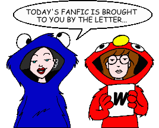
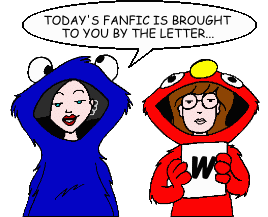

Fan Fiction
"W" by Title

Fan Fiction
"W" by Title

|
Authors: If you no longer wish for any of your stories to be posted, please send e-mail to fanfic@lawndale.net and I will remove them at once. |
| Waiting By Professor Moriarity Category: Romance Trent ponders things on the eve of Daria's 18th birthday. |
| Wake-Up Call By Sadie Knight Category: Romance Hilariousness ensues in a story where not everything is as it seems, as our heroine Daria discovers when she recieves a late night phone call from none other then Jane. Mild sexual content, but not enough to blind anyone (I hope!). Note: This story includes content (language, violence, or sexual situations) that may not be appropriate for some readers. |
| Warped Speed Captain By Thea Zara Category: Crossovers & Parodies A mini-ficlet that puts Daria in an interesting predicament... |
| A Warrior Maid of Lawndale By Mystik Slacker Category: Crossovers & Parodies Beneath the hurtling moons of Barsoom, the angry squeal of a wild thoat echoes, as a lone hero rides out on a mission of honor, to reclaim her lost love, or maybe she's just looking for a good Chinese restaurant. A parody of Edgar Rice Burroughs' Martian stories. |
| The Waste La(w)nd By Gregor Samsa Category: Crossovers & Parodies A poetic meditation upon the state of Lawndale. (A crossover/parody of T.S Eliot's "The Waste Land.") |
| The Way Things Ought to Be By Barry Eshkol Adelman Category: Crossovers & Parodies Daria slips into "The Twilight Zone" and discovers just how true the phrase "be careful what you wish for" can be, as she suddenly finds herself back in Highland... and having traded places with Quinn! |
| The Way We Were Meant to Be By Hikhali Category: Romance Daria faces changes in her life... some good, some bad. A five-part story. |
| We Regret to Inform You... By Brother Grimace Category: Miscellaneous An Iron Chef that deals with a consolation letter written after the death of a "Daria" cast member. |
| Weak at the Freeze By Fiona Lane Category: Holidays Just another Christmas with presents, Jane, Tom, Helen, Jake, Quinn, and the rest! But what's with Jane? |
| Week of Hell By Thomas Mikkelsen Category: Miscellaneous Helen leaves Daria and Quinn alone with Jake. Unfortunately, Jake has got it in his head to buy a gun. |
| Weekend at Barch's By Patrick Moore Category: Crossovers & Parodies Daria and Jane find the body of Ms. Barch in the school's dumpster. If you loved "Weekend at Bernie's," you'll love this story. Or not. Whatever. |
| The Weight of Conscience By Di Category: Alternate History Write-off challenge response. Quinn is in therapy for feeling as though she failed someone. A what-if the episode "Fat Like Me" had ended differently. |
| Welcome Home By RangerLou Category: Past & Future Six years after graduating from Lawndale High, Daria has to deal with the loss of an old friend. |
| Welcome to the Rat Race By Mystik Slacker Category: Miscellaneous Daria and Tiffany separately cope with jobs and parental expectations. Meanwhile, the expanded Fashion Club holds elections and Quinn and Sandi have to adapt to the new members or lose their offices. |
| Were Oh Were By Deref Category: Sci-Fi, Fantasy & Horror A ficlet. Daria's having a bad day. |
| West Lawndale Grand Ballroom Gown By Richard Lobinske Category: Crossovers & Parodies A possible future history of one of the Girls of Lawndale. Inspired by the Jimmy Buffet song "West Nashville Grand Ballroom Gown." |
| What Goes Around (*) By The Angst Guy Category: Alternate History There are lots of ways in which "Dye! Dye! My Darling" could have come out better. And there are lots of ways it could have ended far, far worse. |
| What If By Thomas Mikkelsen Category: Miscellaneous Daria, Jane, and Quinn ponder what might have been. |
| What If... By Professor Moriarity Category: Miscellaneous Tom endures yet another boring history class by reliving how he met Jane and Daria, and starts asking himself, "What if...?" |
| What is Memory? By Love Gordon Category: Miscellaneous A sort-of sequel to "Behind the Pom-Poms: The Brittany Taylor Story." Daria finds a baby on her doorstep, Quinn quits the Fashion Club, and Communists almost take over the country. |
| What She Deserved? [Artwork] By The Unknown Category: Miscellaneous After she becomes a victim of rape herself, Sandi is forced to think about how she's been behaving. But when she learns she's paying a deadly price for the assault, and the police won't do a thing to help, Joanna takes the law into her own hands. |
| What's With Their Eyes? By Alexander Lamar Eldritch Category: School Situations The story of Raven and Rebecca's first day of school at Lawndale High. |
| Whatever It Is By Sarah Lane Category: Past & Future Part 3 in the "Life As We View It" series. Fall is approaching quickly and with it some decisions. |
| When the Torrent of That Time Comes Pouring Back (*) By The Angst Guy Category: Miscellaneous The lone survivor of a disastrous family vacation returns to Lawndale in January 2005, in this sequel to "Nine Point Oh." Note: This story includes content (language, violence, or sexual situations) that may not be appropriate for some readers. |
| When You See Me (*) By Queen Jossie Category: Miscellaneous A continuation of "The Real Story," where Tom sees someone he misses. |
| Where Are They Now? 10 Years in the Future By Naomi Category: Past & Future What all the cast of Daria is doing in 10 years. |
| Where Do We Go From Here? By Di Category: Romance The first prequel to "Undefeated" and "Ten Years." This is where Daria and Jane's relationship changes from friendship to something more. |
| Where No Light Breaks, Where No Sea Runs [Artwork] (*) By The Angst Guy Category: Miscellaneous Sunday afternoons at the Kinsington Women's Correctional Facility are very slow, and one lone inmate has nothing to look forward to--until her only friend unexpectedly appears, and everything changes. Note: This story includes content (language, violence, or sexual situations) that may not be appropriate for some readers. |
| Where No Man Has Gone Before (*) By The Angst Guy Category: Miscellaneous Daria Morgendorffer has a new career in this terrifying sequel to "Beavis and Butt-head Do America." |
| Where, O Where Has My Little Quinn Gone? By Tazzie Category: Miscellaneous Quinn leaves for a party one night, but never comes back. (It was BOUND to happen sooner or later...) |
| Which Sis is Which? By Jesty Category: Miscellaneous Daria and Quinn switch places for a day |
| While My Guitar Gently Bleeds By Richard Lobinske Category: Miscellaneous Trent and Mystik Spiral have cleaned up, gotten serious and are on their way to their first gig in Boston. With his new-found purpose and confidence, Trent has a special song prepared for someone. (Round 1 of the PPMB Angst Guy/Bug Guy Write-Off challenge.) |
| Who Shot Principal Li? [Artwork] By Danny Bronstein Category: Miscellaneous Ms. Li's latest unpleasant changes to the school (which includes the installation of a genuine electric chair) result in a turn of events that leads everyone to want to murder her. A homage to the classic "Who Shot Mr. Burns?" two-part episode of "The Simpsons." |
| The Whole Damned Thing By Don Fields Category: Miscellaneous A wandering little story about Daria's quest for peace and quiet and other of life's useless things. |
| The Whole Truth By Galen Hardesty Category: Miscellaneous Can Daria recover from professional psychiatric care and the loving concern of her parents? Will she have to tell them stuff? Will sadistic fanfic authors ever stop throwing her in the loony bin? Find out in this sequel to Renfield's "Diary Dearest." |
| Why 2K? (*) By Kemical Reaxion Category: Romance On New Year's Eve 1999, as Lawndale loses electricity, anything can happen. Hearts are broken, secrets are revealed, and somebody gets a much needed shower. It's the party of the Millennium, baby! |
| Why You Should Never Hire Brittany Taylor By Robin Sena Category: Miscellaneous And you thought Kevin couldn't hold on to a job... |
| Why? or My Immortal By Isabelle Young-Johnson Category: Romance A short song fic set to "My Immortal" by Evanescence, attempting to delve into Daria and Trent's emotional states at some point between "Lane Miserables" and "Fire!". |
| Willow By Bacner Category: Crossovers & Parodies Ms. Li's latest pet project, Lawndale High's Film-making Club, isn't dead yet. Please witness its next creation (there won't be any survivors - only bodies)! |
| The Winds of Change By Peter Guerin Category: Miscellaneous A story that's set between semesters of Daria's freshman year at college, which wraps up some loose ends from "Is It College Yet?". |
| Windy Travels [Artwork] By Steve Mitchell Category: Miscellaneous It's Alternapalooza all over again, as Daria, Jane, Trent and Jesse encounter one misadventure after another while on their way to a concert. |
| Winter in Hell (*) By The Angst Guy Category: School Situations Two cynical outcasts, seniors at Lawndale High School and the best of friends, struggle through another difficult day. |
| Wish Upon a Fallen Star (*) By The Angst Guy Category: Romance Stacy Rowe goes out on a weird date with Ted DeWitt-Clinton--and they discover the future. |
| With a Twin, Happily By Lydia Irene Category: Miscellaneous Daria's family adopts a girl with a "futuristic" look, and Mystik Spiral finally hits the big time. |
| With a Wild Pack of Cards (*) By The Angst Guy Category: Alternate History In an alternate universe, in their senior year at Lawndale High, Sandi and Quinn discover that Tiffany has a hidden talent for cards--Tarot cards. But Tiffany is not using her deck for mere card tricks... |
| With the Help of Her Friends By Bob Marley Category: Miscellaneous An unsettled Daria seeks advice from others on what to do regarding Tom after the events of "Dye! Dye! My Darling." |
| The Wizard of Ug By Ken T. Category: Crossovers & Parodies Daria and Jane find themselves in the land of Oz, 60 years later. |
| The Wolf (*) By Guy Payne Category: Sci-Fi, Fantasy & Horror From a PPMB Iron Chef about an evil Daria. |
| Wonderlane (*) By The Angst Guy Category: Past & Future It was hot, and little Jane was tired and bored and had nothing to do, when a rabbit ran past her, and-- |
| Woosh (*) By Jill Palmer Category: Miscellaneous A story from Andrea's point of view that explains a bit about her family, one of whom is thought fictional by the student body. |
| Word of the Week By Brother Grimace Category: Miscellaneous Stacy discovers that learning a new word every week has practical applications in her everyday life. |
| Working By Elizabeth Category: Romance Daria is forced by her parents to get a job; fortunately for her, Trent gets a job, too, only they are working at very different places. Daria then finds out that Trent has another girl. Uh-oh! |
| The World of Charles Ruttheimer (*) By Wraith Category: Miscellaneous See a different take on Charles... from the inside. Note: This story includes content (language, violence, or sexual situations) that may not be appropriate for some readers. |
| Would You Like to Take a Survey? (*) By Kemical Reaxion Category: Miscellaneous You know those annoying email surveys you're always getting? Daria, Jane, Trent, and Quinn answer some rather insightful and ridiculous questions in their own unique, ridiculous ways! |
| Write Where It Hurts: Alternate Story By Angelinhel Category: Miscellaneous In "Write Where It Hurts," Helen tells Daria to write something honest. This time, she writes something besides a story about her family in the future. Something with even more personal overtones... |
| Writes of Passage [Artwork] By Deref Category: Series & Multi-Part Stories (Miscellaneous) Love is never easy, true love even less so. Note: This story includes content (language, violence, or sexual situations) that may not be appropriate for some readers. |
| Wry Hard By Crusading_Saint Category: School Situations One lazy Saturday afternoon, strange events begin to plague Lawndale High, including... a return from the dead? |